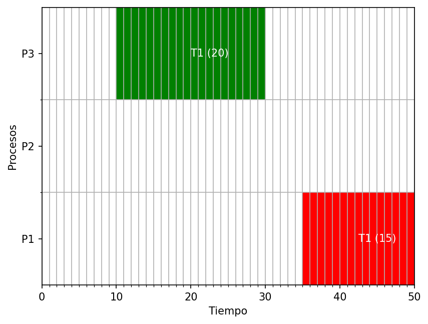

{%extends "./base.html" %}
{%block title%}Visualizador de procesos{%endblock%}
{%block body%}
<h1>Visualizador de procesos</h1>


<div class="row">
    <div class="col-md-8 offset-md-1">
        <h1>Lista de procesos</h1>
        <div class="table-responsive">
            <table class="table table-striped text-center">
                <thead>
                    <tr>
                        <th>PID</th>
                        <th>Nombre del proceso</th>
                        <th>Tiempo de creacion</th>
                        <th>Tiempo de rafaga</th>
                    </tr>
                </thead>
                <tbody>
                    {%for id, nombre, llegada, rafaga in procesos%}
                    <tr>
                        <td>{{id}}</td>
                        <td>{{nombre}}</td>
                        <td>{{llegada}}</td>
                        <td>{{rafaga}}</td>
                    </tr>
                    {%endfor%}
                </tbody>
            </table>
        </div>
    </div>
</div>
{%endblock%}